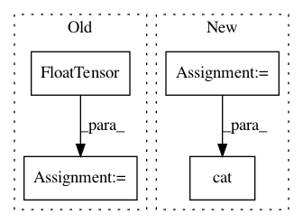

9b664bd7cd8dbb9657626166ba61887ed06774d7,gpytorch/utils/toeplitz.py,,index_coef_to_sparse,#Any#Any#Any#,6
Before Change
value_list.append(value_matrix[i, j])
index_tensor = torch.LongTensor(index_list)
value_tensor = torch.FloatTensor(value_list)
res = torch.sparse.FloatTensor(index_tensor, value_tensor, torch.Size([num_target_points, row_length]))
return res
After Change
num_target_points, num_coefficients = value_matrix.size()
row_tensor = torch.arange(0, num_target_points).unsqueeze(1)
row_tensor = row_tensor.repeat(1, num_coefficients).type_as(index_matrix)
index_tensor = torch.cat([row_tensor.view(1, -1), index_matrix.view(1, -1)], 0)
value_tensor = value_matrix.view(-1)
nonzero_indices = value_tensor.nonzero()
if nonzero_indices.storage():
In pattern: SUPERPATTERN
Frequency: 3
Non-data size: 4
Instances
Project Name: cornellius-gp/gpytorch
Commit Name: 9b664bd7cd8dbb9657626166ba61887ed06774d7
Time: 2017-09-13
Author: gpleiss@gmail.com
File Name: gpytorch/utils/toeplitz.py
Class Name:
Method Name: index_coef_to_sparse
Project Name: rusty1s/pytorch_geometric
Commit Name: cce8409beb4c1b662de2b9635cd723993184be23
Time: 2017-11-10
Author: matthias.fey@tu-dortmund.de
File Name: torch_geometric/datasets/utils/faust_monet.py
Class Name:
Method Name:
Project Name: rusty1s/pytorch_geometric
Commit Name: 6fac413c0c51c3be54de3a68801b43446ab98dee
Time: 2017-10-08
Author: matthias.fey@tu-dortmund.de
File Name: graph/grid.py
Class Name:
Method Name: grid_points